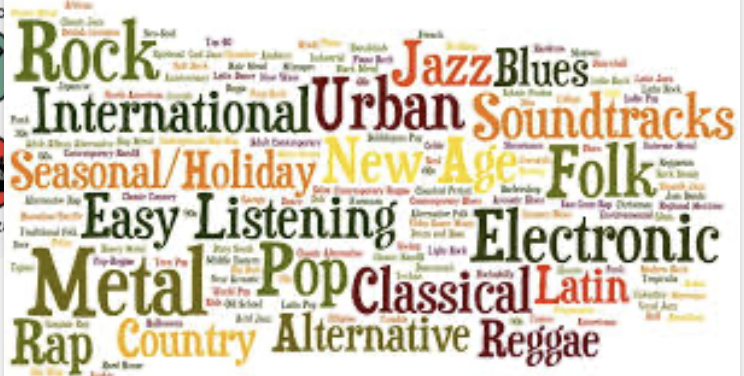

The oversimplification of the Mozart Effect
“Mozart Effect”: idea that classical music—especially Mozart—enhance intelligence,
leading many to assume that classical music holds a unique power over the brain.
Over time, this finding was exaggerated, commercialized, and misrepresented as proof that classical music uniquely enhances cognitive function. While listening to music can certainly have cognitive benefits,
the idea that Mozart alone can make you smarter is an oversimplification of how music influences the mind.

The cognitive benefits of music are not limited to any single genre but rather emerge from its structural elements—rhythmic complexity, melodic patterns, and harmonic variations. Research, including Rauscher and Hinton’s (2011) study Music Instruction and its Diverse Extra-Musical Benefits, suggests that modern genres like rap, lo-fi, and electronic music can foster similar cognitive advantages. By focusing on the mechanisms behind music’s effects rather than its classification, this perspective challenges the classical music bias and highlights the potential of diverse musical styles in cognitive enhancement.
Disclaimer: This isn't about bashing Mozart—he’s great! This is just research to show that all kinds of music can have cognitive benefits, not just classical. Keep an open mind and explore different genres!